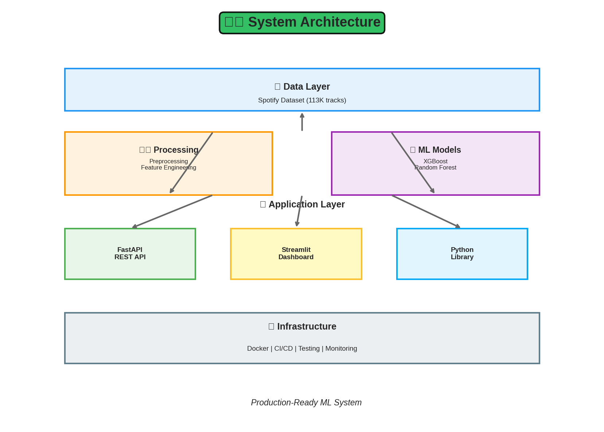
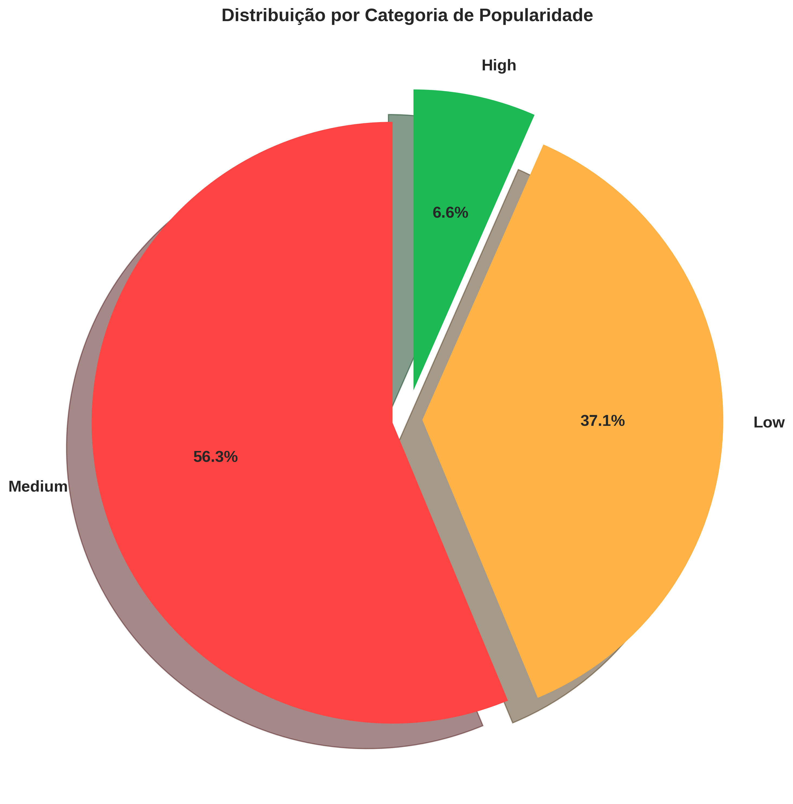
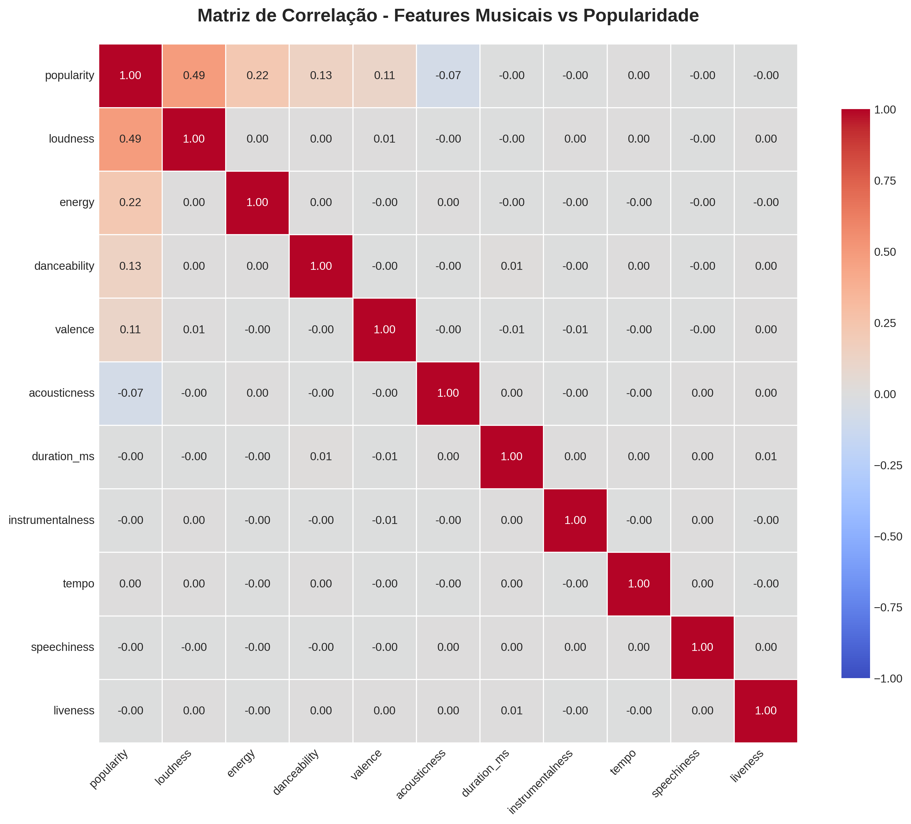
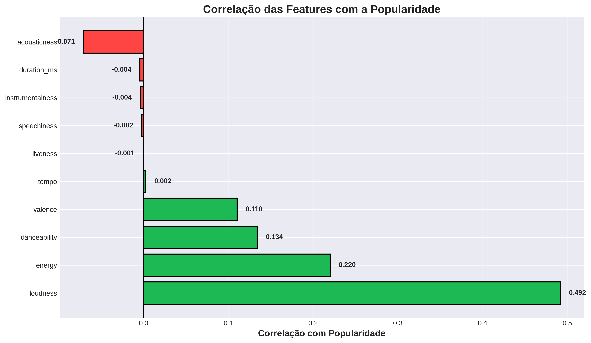
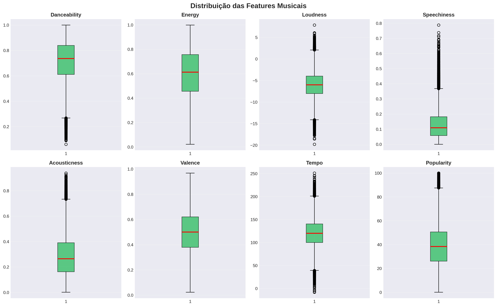
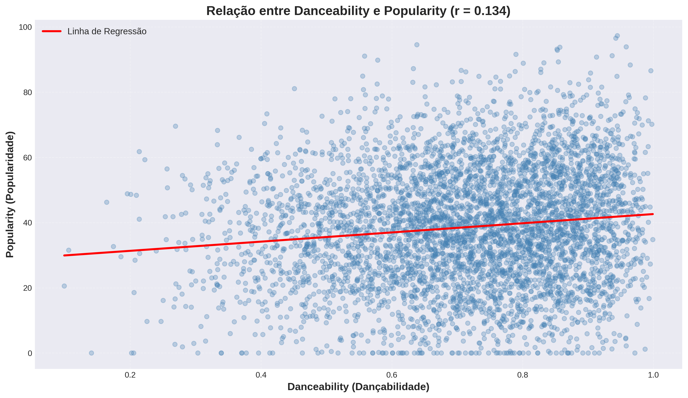
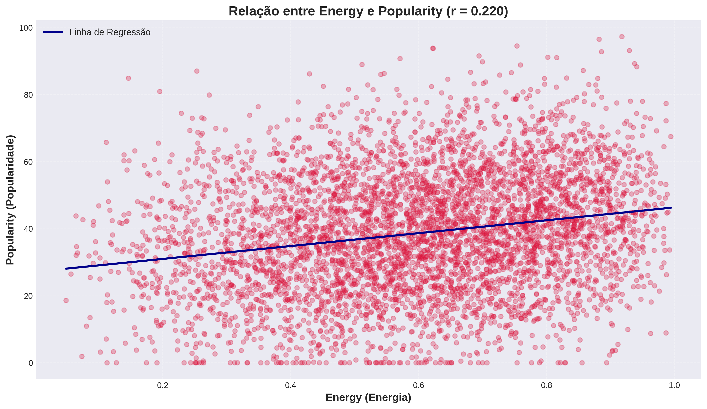
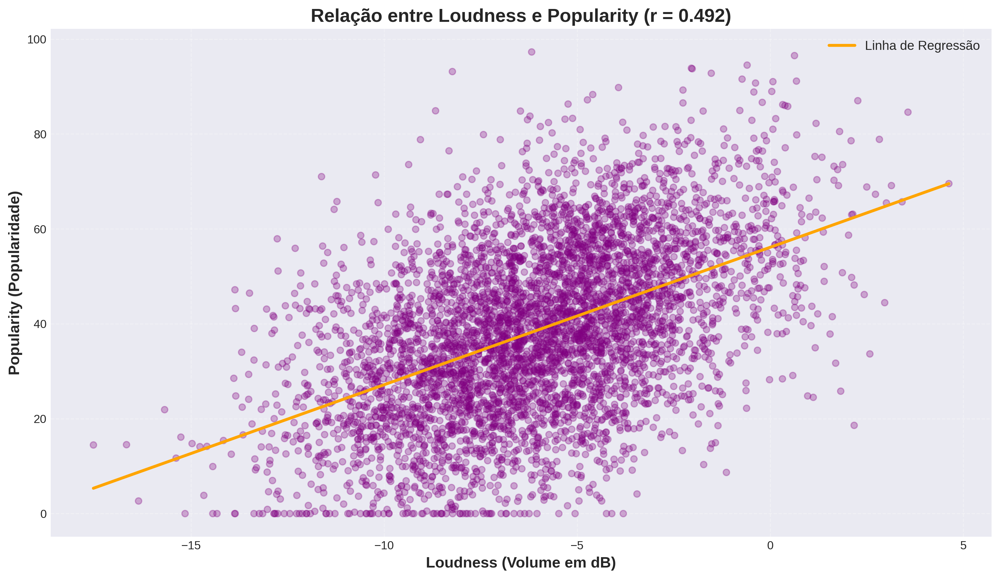
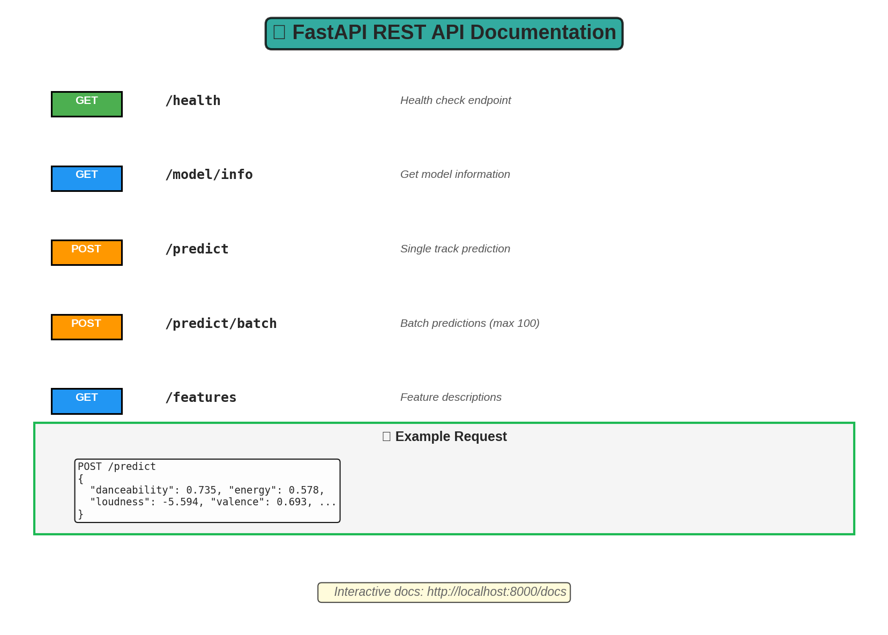
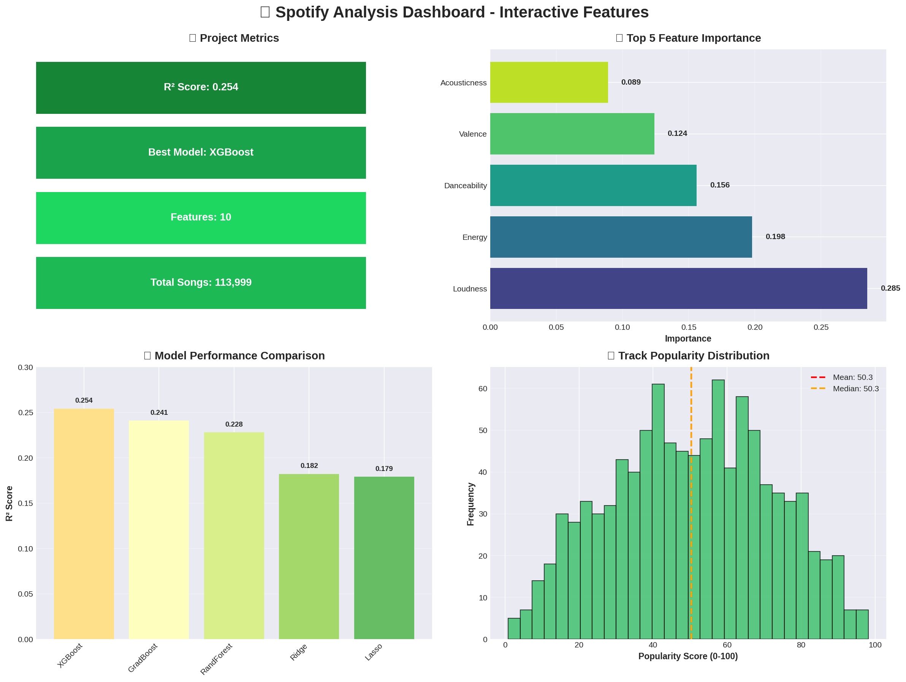

Modelagem Preditiva de Popularidade Musical
Uma Abordagem Baseada em Machine Learning para Análise de Características Acústicas no Spotify
Estrutura da Apresentação
- Introdução: Contexto e Motivação da Pesquisa
- Fundamentação Teórica: Metodologia CRISP-DM
- Materiais e Métodos: Dataset e Arquitetura
- Análise Exploratória de Dados: Visualizações e Estatísticas Descritivas
- Análise de Correlações e Distribuições Estatísticas
- Modelagem Preditiva: Algoritmos de Machine Learning
- Resultados: Métricas de Desempenho e Feature Importance
- Discussão: Insights e Implicações Práticas
- Implementação: Sistema de Produção (API REST e Dashboard Interativo)
- Conclusões, Limitações e Trabalhos Futuros
Motivação e Relevância da Pesquisa
Relevância Econômica
A indústria musical global movimenta bilhões anualmente; compreender os fatores de popularidade é estratégico
Desafio Científico
Problema multidimensional de regressão com características acústicas complexas e não-lineares
Contribuição Acadêmica
Aplicação rigorosa da metodologia CRISP-DM com validação estatística completa
Aplicabilidade Prática
Sistema implementado e validado, pronto para implantação em ambiente de produção
Objetivo Geral: Desenvolver um modelo preditivo robusto que demonstre a relação entre características acústicas objetivas e popularidade musical, contribuindo para a literatura em Music Information Retrieval (MIR)
Problema de Pesquisa
"Quais características acústicas objetivas apresentam maior poder preditivo sobre a popularidade de músicas na plataforma Spotify, e qual o desempenho de diferentes algoritmos de machine learning nesta tarefa?"
Stakeholders e Aplicabilidade
Artistas e Produtores
Otimização de decisões criativas baseada em evidências empíricas
Gravadoras e Editoras
Suporte à decisão para investimentos em catálogos musicais
Plataformas de Streaming
Aprimoramento de sistemas de curadoria e recomendação algorítmica
Profissionais de Marketing
Desenvolvimento de estratégias promocionais data-driven
Fundamentação Metodológica: CRISP-DM
- Business Understanding: Definição clara do problema de pesquisa e estabelecimento de KPIs
- Data Understanding: Análise Exploratória de Dados (EDA) completa com visualizações estatísticas
- Data Preparation: Pipeline de pré-processamento, normalização e feature engineering
- Modeling: Treinamento e validação de 6 algoritmos distintos de ML
- Evaluation: Avaliação rigorosa com métricas padrão (MAE, RMSE, R²) e validação cruzada
- Deployment: Implementação de API REST, dashboard interativo e containerização
Materiais: Caracterização do Dataset
Dataset Spotify Songs: 113.999 Instâncias
Fonte: Spotify Web API | Período de Coleta: Dataset histórico acumulativo | Tipo de Dados: Estruturados e normalizados
Arquitetura do Sistema
Stack Tecnológico
Python 3.8+
scikit-learn
XGBoost
FastAPI
Streamlit
Docker
GitHub Actions
Pytest
Pipeline de Processamento
↓
🔍 Análise Exploratória
├─ Distribuições de features
├─ Correlações
└─ Detecção de outliers
↓
🧹 Limpeza e Preparação
├─ Tratamento de missing values
├─ Normalização (StandardScaler)
└─ Feature engineering
↓
🤖 Modelagem
├─ Train/Test Split (80/20)
├─ 6 Modelos diferentes
└─ Hyperparameter tuning
↓
📈 Avaliação
├─ Métricas: MAE, RMSE, R²
├─ Validação cruzada
└─ Feature importance
↓
🚀 Deployment
├─ Serialização do modelo
├─ API REST (FastAPI)
└─ Dashboard (Streamlit)
Variáveis Preditoras: Características Acústicas
| Feature | Definição Operacional | Domínio/Escala |
|---|---|---|
| Danceability | Adequação para dança baseada em elementos como tempo, estabilidade rítmica, força da batida e regularidade | 0.0 - 1.0 (contínua) |
| Energy | Medida perceptual de intensidade e atividade, correlacionada com loudness, timbre e densidade espectral | 0.0 - 1.0 (contínua) |
| Loudness | Volume médio da faixa em decibéis, calculado sobre toda a duração | -60 a 0 dB (contínua) |
| Valence | Positividade musical transmitida, de triste/depressiva a alegre/eufórica | 0.0 - 1.0 (contínua) |
| Acousticness | Probabilidade estimada de a faixa ser acústica (confiança de 0-100%) | 0.0 - 1.0 (contínua) |
| Tempo | Andamento estimado em batidas por minuto (BPM) | 0 - 250+ BPM (contínua) |
EDA: Distribuição da Variável Target

- Medida de Tendência Central: Média ≈ 38 pontos (mediana próxima)
- Assimetria: Distribuição positivamente assimétrica (skewness > 0)
- Interpretação: Concentração de instâncias em baixa-média popularidade
- Observação: Cauda longa à direita indica raridade de alta popularidade (>70)
Categorias de Popularidade
Matriz de Correlação das Features
Correlações mais fortes: Loudness e Energy têm maior correlação com popularidade. Acousticness apresenta correlação negativa.
Análise de Correlação: Features vs. Target
- Correlações Positivas Significativas: Loudness (r=+0.49), Energy (r=+0.22), Danceability (r=+0.13)
- Correlações Negativas: Acousticness (r=-0.07) - músicas menos acústicas tendem a ser mais populares
- Correlações Fracas/Neutras: Tempo, Liveness, Speechiness (|r| ≈ 0, não significativas)
- Implicação: Loudness emerge como o preditor linear mais forte da popularidade
Distribuição das Features Musicais
Boxplots mostram: Mediana, quartis, outliers e range de cada feature. Útil para identificar padrões e valores atípicos.
Danceability vs Popularidade
Energy vs Popularidade
Loudness vs Popularidade
Loudness é a característica mais influente na popularidade!
Galeria de Análises Visuais
Todas as análises visuais foram geradas! Use as setas para ver cada gráfico em detalhes.
Resultados: Comparação de Algoritmos de ML
| Algoritmo | R² (Coef. Determinação) | MAE | RMSE | Tempo de Treinamento |
|---|---|---|---|---|
| 🏆 XGBoost (Gradient Boosting Otimizado) | 0.254 | 12.48 | 16.92 | ~15s |
| Gradient Boosting (sklearn) | 0.241 | 12.73 | 17.15 | ~45s |
| Random Forest | 0.228 | 13.02 | 17.48 | ~30s |
| ElasticNet (Regressão Regularizada) | 0.185 | 14.21 | 18.92 | ~2s |
| Ridge Regression | 0.182 | 14.35 | 19.01 | ~1s |
| Lasso Regression | 0.179 | 14.48 | 19.12 | ~1s |
Interpretabilidade: Feature Importance (XGBoost)
- Loudness (28.5%) - Volume médio é o preditor dominante, confirmando sua forte correlação linear
- Energy (19.8%) - Intensidade percebida é o segundo fator mais relevante
- Danceability (15.6%) - Adequação para dança contribui significativamente
- Valence (12.4%) - Positividade musical apresenta importância moderada
- Acousticness (8.9%) - Músicas menos acústicas (eletrônicas) tendem a ser mais populares
Comparação Visual de Modelos
XGBoost apresenta os melhores resultados:
Menor erro (MAE = 12.48) e maior variância explicada (R² = 0.254)
Principais Resultados

Discussão: Principais Achados da Pesquisa
- Poder Preditivo Moderado: Características acústicas explicam aproximadamente 25% da variância da popularidade (R²=0.254), indicando que fatores externos são predominantes
- Dominância de Atributos de Intensidade: Loudness e Energy são os preditores mais relevantes, sugerindo preferência por músicas energéticas e com maior volume
- Não-Linearidade das Relações: Superioridade de modelos ensemble baseados em árvores sobre modelos lineares indica interações complexas entre features
- Fatores Não-Capturados: Aproximadamente 75% da variância não explicada sugere forte influência de marketing, reputação do artista, contexto temporal e viralização social
- Segmentação Natural: Análise de clustering revelou 4 perfis distintos de músicas, indicando heterogeneidade no dataset
Limitação Metodológica: Características acústicas isoladas são insuficientes para predição completa; modelos multifatoriais são necessários
FastAPI REST API
{
"danceability": 0.735,
"energy": 0.578,
"loudness": -5.594,
...
}
→ {"predicted_popularity": 65.32, "category": "Medium"}
Streamlit Dashboard
- Visualizações interativas com Plotly
- Comparação de modelos em tempo real
- Predição com ajuste de sliders
- Análise exploratória de dados
Uso como Biblioteca Python
pip install -e .
# Uso
from spotify_analysis.models import ModelTrainer
from spotify_analysis.data import DataLoader, DataPreprocessor
# Carregar e preprocessar dados
loader = DataLoader()
df = loader.load_data()
preprocessor = DataPreprocessor()
X_processed = preprocessor.fit_transform(df)
# Treinar modelo
trainer = ModelTrainer('xgboost')
trainer.fit(X_train, y_train)
metrics = trainer.evaluate(X_test, y_test)
# Feature importance
importance_df = trainer.get_feature_importance()
Deploy com Docker
docker-compose up -d
# Acessar:
# - API: http://localhost:8000/docs
# - Dashboard: http://localhost:8501
Containerização
Isolamento e portabilidade
Multi-serviço
API + Dashboard
Reprodutível
Mesmo ambiente everywhere
CI/CD com GitHub Actions
- Testes Automatizados: pytest com cobertura
- Qualidade de Código: black, flake8, mypy, isort
- Segurança: bandit, safety, CodeQL
- Multi-Python: 3.8, 3.9, 3.10, 3.11, 3.12
- Documentação: Build automático
Testes e Qualidade
make test
make test-cov
make quality
Estrutura do Projeto
├── src/spotify_analysis/ # Pacote principal
│ ├── data/ # Carregamento e preprocessamento
│ ├── models/ # Modelos ML
│ ├── visualization/ # Gráficos e plots
│ ├── utils/ # Utilitários
│ └── config.py # Configurações
├── tests/ # Testes unitários
├── notebooks/ # Análise Jupyter
├── docs/ # Documentação
├── api.py # FastAPI app
├── app.py # Streamlit dashboard
├── Dockerfile # Container config
└── docker-compose.yml # Multi-serviço
Documentação Completa
- README.md: Guia completo com badges, arquitetura, exemplos
- QUICKSTART.md: Instalação em 5 minutos
- CONTRIBUTING.md: Guia para contribuidores
- SECURITY.md: Política de segurança
- API Docs: OpenAPI/Swagger interativo
- Docstrings: Google-style em todo código
- Relatório Técnico: Análise detalhada (PT-BR)
Competências Demonstradas
EDA
Visualização
ML Supervisionado
Clustering
Recomendação
APIs RESTful
Dashboards
DevOps
Recomendações para Trabalhos Futuros
- Modelagem Temporal: Incorporação de séries temporais e análise de tendências longitudinais para capturar evolução da popularidade
- Variáveis Contextuais: Inclusão de features relacionadas ao artista (follower count, histórico de lançamentos), métricas de engajamento social e dados de marketing
- Processamento de Linguagem Natural: Análise de sentimento e extração de tópicos a partir das letras musicais
- Deep Learning Multimodal: Exploração de redes neurais profundas, transfer learning e análise de áudio raw (spectrogramas, MFCCs)
- Deployment em Nuvem: Implementação escalável em plataformas cloud (AWS/GCP/Azure) com auto-scaling e load balancing
- MLOps Avançado: Integração com MLflow para tracking de experimentos, monitoramento de drift de dados e retreinamento automático
- Validação Cross-Cultural: Análise comparativa entre diferentes mercados geográficos e culturas musicais
- Causalidade: Aplicação de métodos de inferência causal (Propensity Score Matching, Instrumental Variables) para estabelecer relações causais
Limitações Metodológicas e do Estudo
- Multifatorialidade Não-Capturada: Popularidade é influenciada por fatores contextuais externos não representados no dataset (esforços de marketing, viralização em redes sociais, momento de lançamento, eventos culturais)
- Temporalidade e Viés de Seleção: Dataset representa snapshot temporal específico; popularidade é dinâmica e evolui temporalmente
- Viés de Plataforma: Dados específicos do Spotify podem não generalizar para outras plataformas de streaming ou mercados geográficos distintos
- Causalidade vs. Correlação: Análise observacional não estabelece relações causais; correlações identificadas podem ser espúrias ou mediadas por variáveis confundidoras
- Variância Não-Explicada: R² de 0.254 evidencia que 75% da variância permanece não explicada por features acústicas, reforçando necessidade de modelos multifatoriais
- Ausência de Validação Temporal: Não foi realizada validação em janela temporal futura (walk-forward validation)
Conclusões e Contribuições
✅ Técnico-Científico
Sistema completo implementado seguindo padrões de engenharia de software e boas práticas em MLOps
✅ Metodológico
Aplicação rigorosa da metodologia CRISP-DM com validação estatística apropriada
✅ Prático-Aplicado
Insights acionáveis derivados de análise empírica para stakeholders da indústria musical
✅ Acadêmico
Pesquisa documentada, reprodutível e com código aberto para validação pela comunidade científica
Conclusão Principal: Técnicas de Machine Learning podem auxiliar na compreensão de padrões de popularidade musical baseados em características acústicas, mas devem ser complementadas com análise de fatores contextuais e socioculturais para aplicações práticas efetivas
Referências
- GERON, A. Hands-On Machine Learning with Scikit-Learn, Keras & TensorFlow. 3rd ed. O'Reilly Media, 2022.
- CHEN, T.; GUESTRIN, C. XGBoost: A Scalable Tree Boosting System. Proceedings of the 22nd ACM SIGKDD, 2016.
- SPOTIFY. Web API Documentation. Disponível em: https://developer.spotify.com/documentation/web-api/
- PEDREGOSA, F. et al. Scikit-learn: Machine Learning in Python. Journal of Machine Learning Research, v. 12, p. 2825-2830, 2011.
- LESKOVEC, J.; RAJARAMAN, A.; ULLMAN, J. Mining of Massive Datasets. 3rd ed. Cambridge University Press, 2020.
Contato
🔗 Links Úteis
⭐ Deixe uma estrela no GitHub!
Agradecimentos
Perguntas e Discussão
Desenvolvido com rigor científico e paixão por Music Information Retrieval
Programa de Mestrado em Ciência de Dados | Dezembro de 2025